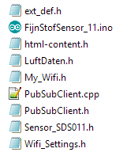

Fijnstof_Sensor V0.1
23 April, 2018
18:42
Grafiek | Uitleg |
|
De gemeten waarden |
|
De Standaard Deviatie |
|
We zien hier dat als Max_10 piekt, dan blijkt ook dat dat het Min_10 piekt. Dus blijkbaar zijn dat echt gemeten of berekende waarden (en dus niet een foutief uitgelezen waarde. |
|
Helling van de lineaire regressie.
De blauwe curve (PM 2.5) is meestal positief. Dus de gemeten waarde stijgt licht tijdens de meetperiode. |
|
|
File | Description |

|
|
FijnStofSensor_11.ino | This is the main file |
Sensor_SDS011.h | The library containing a class for the SDS011 sensor |
Ext_def.h Html-content.h | Files directly taken from the airrohr-firmware |
Luftdaten.h | General routines, taken unmodified from the main program from airrohr-firmware |
PubSubClient.cpp PubSubClient.cpp | Standard MQTT client module, except a few settings are improved |
My_Wifi.h | My own helper routine, for easy setup of wifi and mqtt connections. |
Wifi_Settings.h | Personal Settings for the wifi and mqtt connections:
/* *********************************************************************** PRIVATE GLOBALS *********************************************************************** */ const char* Wifi_User = "" ; const char* Wifi_Pwd = "" ;
const char* Broker_IP = "192.168.0.18" ; int Broker_Port = 1883 ;
const char* MQTT_User = "" ; const char* MQTT_Pwd = "" ;
|
|
|
|
|
Output on the serial line in case of
debug = DEBUG_WARNING ;
Screen clipping taken: 23-Apr-18, 19:24
Created with Microsoft Office OneNote 2007
One place for all your notes and information